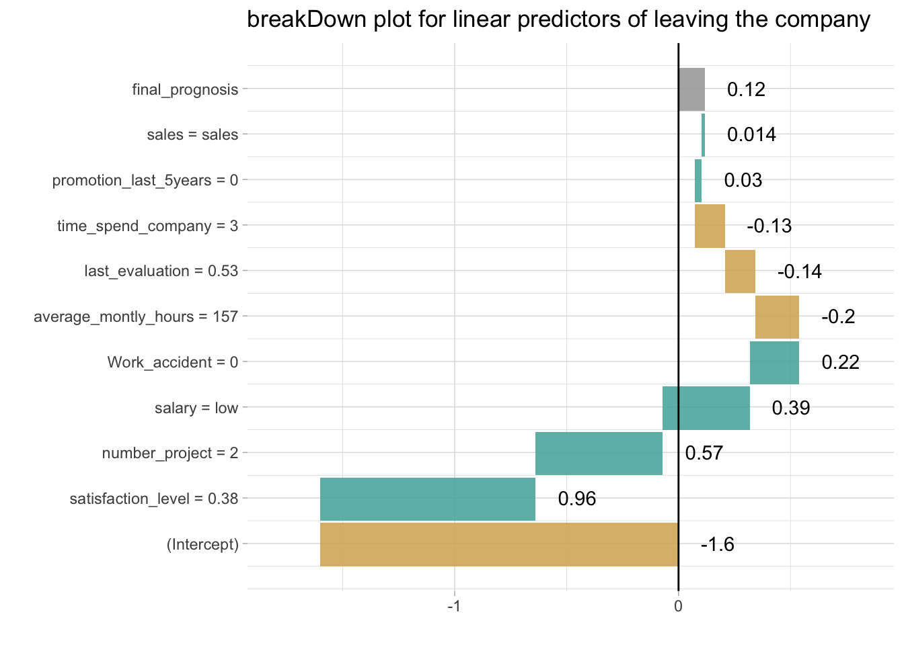
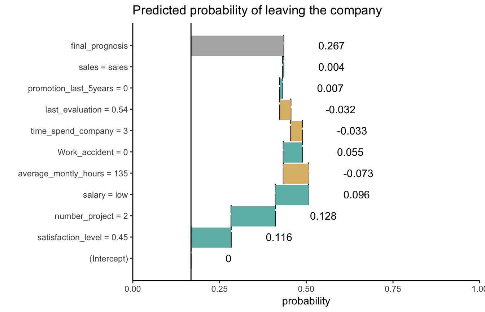

breakDown plots for the generalised linear model
Przemyslaw Biecek
2017-12-03
Here we will use the HR churn data (https://www.kaggle.com/ludobenistant/hr-analytics/data) to present the breakDown package for glm models.
The data is in the breakDown package
library(breakDown)
head(HR_data, 3)
#> satisfaction_level last_evaluation number_project average_montly_hours
#> 1 0.38 0.53 2 157
#> 2 0.80 0.86 5 262
#> 3 0.11 0.88 7 272
#> time_spend_company Work_accident left promotion_last_5years sales salary
#> 1 3 0 1 0 sales low
#> 2 6 0 1 0 sales medium
#> 3 4 0 1 0 sales mediumNow let’s create a logistic regression model for churn, the left variable.
model <- glm(left~., data = HR_data, family = "binomial")But how to understand which factors drive predictions for a single observation?
With the breakDown package!
Explanations for the linear predictor.
library(ggplot2)
explain_1 <- broken(model, HR_data[11,])
explain_1
#> contribution
#> (Intercept) -1.600
#> satisfaction_level = 0.45 0.670
#> number_project = 2 0.570
#> salary = low 0.390
#> average_montly_hours = 135 -0.290
#> Work_accident = 0 0.220
#> time_spend_company = 3 -0.130
#> last_evaluation = 0.54 -0.130
#> promotion_last_5years = 0 0.030
#> sales = sales 0.014
#> final_prognosis -0.260
#> baseline: 0
plot(explain_1) + ggtitle("breakDown plot for linear predictors")
Explanations for the probability with intercept set as an origin.
explain_1 <- broken(model, HR_data[11,], baseline = "intercept")
explain_1
#> contribution
#> satisfaction_level = 0.45 0.670
#> number_project = 2 0.570
#> salary = low 0.390
#> average_montly_hours = 135 -0.290
#> Work_accident = 0 0.220
#> time_spend_company = 3 -0.130
#> last_evaluation = 0.54 -0.130
#> promotion_last_5years = 0 0.030
#> sales = sales 0.014
#> final_prognosis 1.300
#> baseline: -1.601457
plot(explain_1,
trans = function(x) exp(x)/(1+exp(x))) + ggtitle("Predicted probability of leaving the company")+ scale_y_continuous( limits = c(0,1), name = "probability", expand = c(0,0))
#> Scale for 'y' is already present. Adding another scale for 'y', which
#> will replace the existing scale.